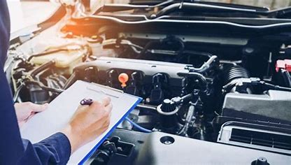
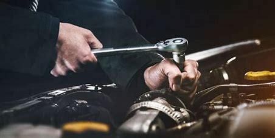
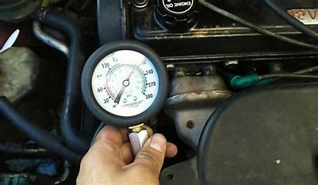

SERVICIO AUTOMOTRIZ TORO MOTOR GARAGE
Revisión para adquisición Carro



Una revisión general automotriz es un informe completo que acredite las condiciones óptimas del vehículo nos
evitará disgustos, preocupaciones y gastos innecesarios, debido a que no solo debemos confiarnos únicamente de
su apariencia exterior y un interior bonito, es indispensable que conozcamos su situación mecánica actual.
- Prueba de Vacío:
- Consiste en inyectar aire a presión en cada una de las cámaras de combustión para determinar fugas y el
origen de esta, que puede ser por: Anillos o Válvulas (de escape o admisión)
- Prueba de Compresión de Motor:
- Consiste en conectar el medido de compresión en los cilindros del motor mientras está a su temperatura
máxima de operación, hasta que el pistón este en lo más alto o la presión en el indicador llegue a su valor
máximo. Se mide la presión desde el primer hasta el ultimo pistón; Un cilindro está en buenas condiciones si
alcanza en la primera carrera del pistón el 70% del valor máximo de la compresión indicada por le
fabricante.
- Motor:
- Se comprueba su estado actual, examinando si existen fugas de compresión, valoración de los niveles de
aceite, el estado del ralentí, si tiene ruidos, vibraciones o bien humos y su funcionamiento general
- Suspensión:
Se tiene presente el estado de los amortiguadores, las tijeras, los bujes y demás componentes del
sistema de suspensión.